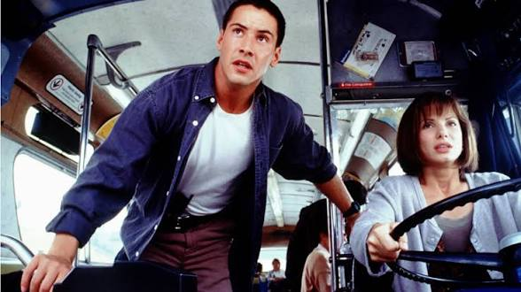

🚍 SPEED (1994) — CERTIFIED MGC VF-35

🏛 MGC RESOURCES COURT: INITIAL INQUEST
- ASSET TITLE: Speed (1994) – The Los Angeles Commuter Extortion Ledger
- PROPOSED BASE GRADE: Certified MGC VF-35 (Choice Very Fine / High-Luster Circulation Wear)
- PRESIDING: Judge Mina, Chief of Resources (Ruby Court)
- CASE FILE: #035
📜 THE FORENSIC NARRATIVE BREAKDOWN & RECOVERY
The Chief of Resources boots up the high-velocity diagnostic console, clears the viewport path, and slides the 5x magnifying lens directly onto the high-stress, nitro-fueled surface of this 1990s blockbuster coin.
🚨 THE THREE SPECIFIC PLANCHET FLAWS:
1. The Pre-Arrest Logic Bypass (The Elevator Shaft Structural Scuff)
The Defect:
An uncalibrated tactical narrative shortcut during the first-act skyscraper hostage sequence that shatters baseline police procedural reality.The Forensic Data:
Under our strict lens, the entire opening conflict hinges on an extreme logic leak. After Jack and Harry successfully thwart Howard Payne’s elevator bombing, they trap him in a service hallway. Payne grabs Harry as a hostage. In a striking display of unpolished script friction, Jack shoots his own partner in the leg to “take away the hostage’s mobility.” While this creates a legendary cinematic crescendo, the subsequent screenplay logic completely collapses: Payne drops Harry, runs into a freight elevator, and instantly explodes his own vest—yet the LAPD command structure completely ignores standard administrative and criminal oversight. Instead of Jack facing immediate suspension, Internal Affairs investigations, and gross negligence charges, the script skips all structural realism to instantly award him a commendation medal at a public ceremony just to fast-forward to the bus launch.
2. The Uncalibrated 50-Foot Freeway Leap (The Mechanical Logic Blowout)
The Defect:
A catastrophic violation of physical mass and aerodynamic properties during the second-act highway transit sequence.The Forensic Data:
Slide the 5x magnifying lens across the iconic freeway sequence and the realism alloy suffers a total blowout. The screenplay forces the gallery to believe that a heavily loaded, standard 30,000-pound Los Angeles city transit bus traveling at 50 mph can launch off an un-sloped, completely flat, decaying highway gap, fly 50 feet through mid-air, and land perfectly on its wheels with zero chassis collapse, tire explosions, or instant passenger fatalities. Because the camera angle explicitly shows the bus tilting upward during flight without a ramp to create lift, the scene introduces an impossible, high-velocity studio fantasy blemish that permanently marks up the layout canvas.
3. The Subway Derailment Overdrive (The Third-Act Momentum Freeze)
The Defect:
Severe narrative fragmentation and a formulaic genre pivot during the final fifteen minutes under the city streets.The Forensic Data:
The narrative trajectory attempts to re-strike the entire movie’s pacing engine after the main bus asset has already been safely detonated on the airport runway. By trapping Annie in a runaway, un-decelerated subway train car that plows through a construction barrier and flips straight onto Hollywood Boulevard, the script suffers from structural editing fatigue. Jack and Annie survive an impact that would physically liquefy human internal organs with only a few minor scratches. This sudden, repetitive reliance on a cartoonish, invincible-hero blueprint stalls the film’s organic tension and acts as a massive pacing drag, permanently capping the asset right at the firm VF-35 line.
⚖️ THE REMODELED JUDICIAL VERDICT
- With all three initial planchet flaws formally logged and sustained on the record, the hyper-glow is officially purged. The practical stunt luster prevents it from dropping down to the lower courts, but the uncalibrated elevator tactical logic, the impossible bus leap, and the invincibility armor of the subway climax leave definitive handling scratches on the ruby canvas.
- MGC VF-35 Choice Very Fine. Case Closed.

• © 2026 MOVIE GRADING CONSENSUS. All Sovereign Rights Reserved.